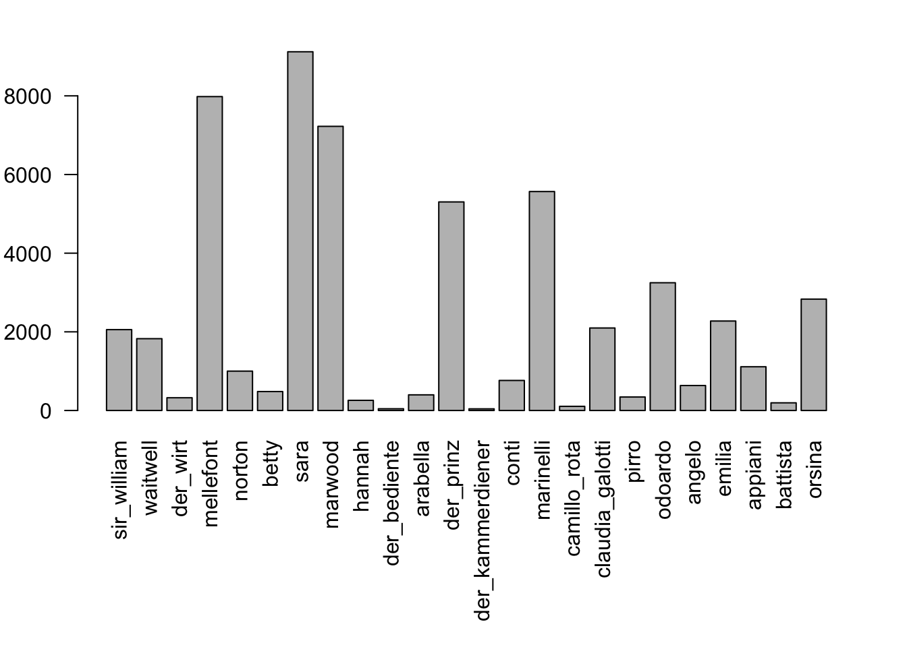
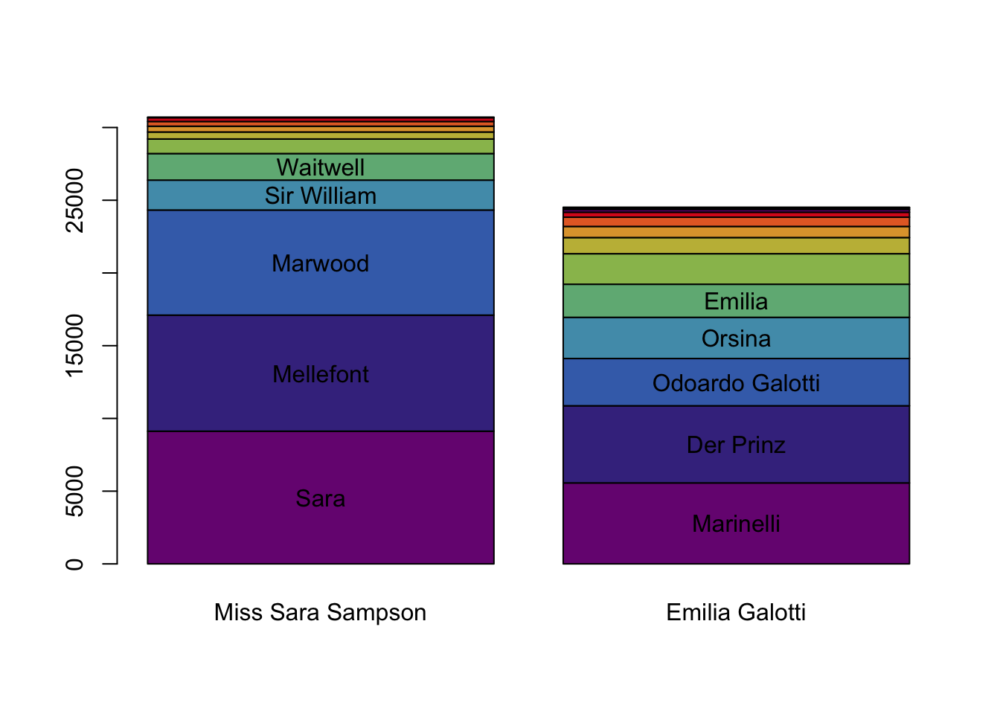
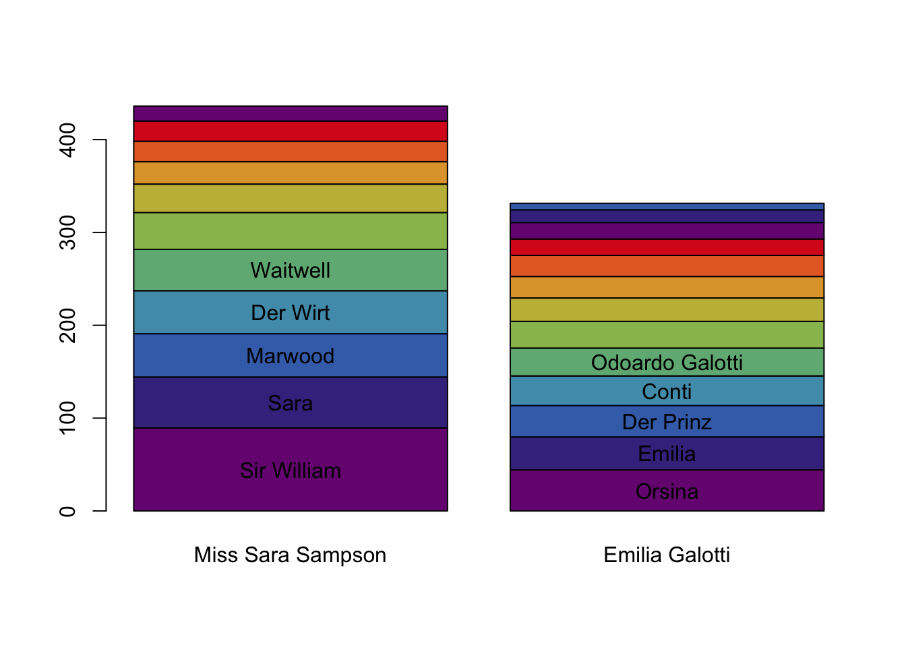

3 Who’s talking how much?
Figure 3.1: Relevant classes and functions in this chaper
First, we calculate summary statistics over all characters.
charStats <- characterStatistics(text)
charStats## corpus drama character tokens types utterances
## 1 test rjmw.0 sir_william 2056 698 23
## 2 test rjmw.0 waitwell 1826 568 41
## 3 test rjmw.0 der_wirt 324 177 7
## 4 test rjmw.0 mellefont 7981 1722 201
## 5 test rjmw.0 norton 1001 407 46
## 6 test rjmw.0 betty 482 223 20
## 7 test rjmw.0 sara 9121 1908 166
## 8 test rjmw.0 marwood 7225 1757 155
## 9 test rjmw.0 hannah 258 155 16
## 10 test rjmw.0 der_bediente 44 34 2
## 11 test rjmw.0 arabella 398 162 13
## 12 test rksp.0 der_prinz 5303 1257 157
## 13 test rksp.0 der_kammerdiener 42 34 6
## 14 test rksp.0 conti 764 325 24
## 15 test rksp.0 marinelli 5567 1324 221
## 16 test rksp.0 camillo_rota 106 62 6
## 17 test rksp.0 claudia_galotti 2098 657 73
## 18 test rksp.0 pirro 343 196 25
## 19 test rksp.0 odoardo 3248 891 108
## 20 test rksp.0 angelo 635 300 28
## 21 test rksp.0 emilia 2275 630 64
## 22 test rksp.0 appiani 1112 426 48
## 23 test rksp.0 battista 195 112 11
## 24 test rksp.0 orsina 2832 743 64
## utteranceLengthMean utteranceLengthSd firstBegin lastEnd
## 1 89.39130 108.948169 597 170838
## 2 44.53659 59.768762 670 158683
## 3 46.28571 45.492543 3571 5695
## 4 39.70647 50.034972 5848 170188
## 5 21.76087 23.601492 6328 170456
## 6 24.10000 36.404019 9014 156987
## 7 54.94578 77.785973 11766 167457
## 8 46.61290 62.383230 28320 141005
## 9 16.12500 15.654073 28392 58523
## 10 22.00000 12.727922 31532 31790
## 11 30.61538 31.967532 43987 52559
## 12 33.77707 40.807176 426 136067
## 13 7.00000 5.215362 1149 24954
## 14 31.83333 40.141778 2654 12212
## 15 25.19005 29.844599 13147 134486
## 16 17.66667 19.179851 25577 26914
## 17 28.73973 29.131897 27006 112526
## 18 13.72000 10.663489 27113 50425
## 19 30.07407 40.399571 27385 135555
## 20 22.67857 19.573326 28777 64877
## 21 35.54688 48.159105 36769 134940
## 22 23.16667 25.525401 44452 56735
## 23 17.72727 32.948720 67465 86481
## 24 44.25000 50.977119 88094 112182This already gives us a lot of information about the characters. In particular, the function characterStatistics() returns a table (of the types QDCharacterStatistics, QDHasCharacter and data.frame) with information about:
- the number of tokens a character speaks (
tokens), - the number of different tokens a character speaks (
types), - the number of utterances (
utterances), - the average length of the utterances (
utteranceLengthMean), - their standard deviation (
utteranceLengthSd), - the character position of the start of the first utterance (
firstBegin), and - the character position of the end of the last utterance (
lastEnd).
The function characterStatistics() provides a number of options to control its exact behaviour. Entering ?characterStatistics in the R console opens the documentation for the function with a description of all the options. We’ll describe some frequently used options here as well:
Punctuation: By default, all punctuation marks are counted as tokens. This behaviour can be changed by setting
filterPunctuation=TRUE.Normalization: The values in the table above are all absolute values. When comparing to other texts, one is often interested in normalized values. If the option
normalizeis set toTRUE, all values will be normalised (if applicable).Segmentation: By default, the function extracts values for the entire play. With the option
segment, it is possible to extract statistics by act or scene, as shown in the example below. Except for the additional columnAct, the columns in the table are the same as before.
characterStatistics(rksp.0,
segment="Act")## corpus drama Act character tokens types utterances
## 1 test rksp.0 I der_prinz 2740 795 71
## 2 test rksp.0 I der_kammerdiener 42 34 6
## 3 test rksp.0 I conti 764 325 24
## 4 test rksp.0 I marinelli 1038 412 31
## 5 test rksp.0 I camillo_rota 106 62 6
## 6 test rksp.0 II claudia_galotti 1252 477 50
## 7 test rksp.0 II pirro 343 196 25
## 8 test rksp.0 II odoardo 611 295 17
## 9 test rksp.0 II angelo 385 214 19
## 10 test rksp.0 II emilia 1166 417 28
## 11 test rksp.0 II appiani 1112 426 48
## 12 test rksp.0 II marinelli 527 255 28
## 13 test rksp.0 III marinelli 1814 605 56
## 14 test rksp.0 III der_prinz 945 398 29
## 15 test rksp.0 III angelo 250 147 9
## 16 test rksp.0 III battista 187 106 9
## 17 test rksp.0 III emilia 413 175 16
## 18 test rksp.0 III claudia_galotti 614 241 16
## 19 test rksp.0 IV der_prinz 803 319 30
## 20 test rksp.0 IV marinelli 1358 495 72
## 21 test rksp.0 IV battista 8 7 2
## 22 test rksp.0 IV orsina 2832 743 64
## 23 test rksp.0 IV odoardo 706 275 30
## 24 test rksp.0 IV claudia_galotti 232 125 7
## 25 test rksp.0 V marinelli 830 363 34
## 26 test rksp.0 V der_prinz 815 321 27
## 27 test rksp.0 V odoardo 1931 620 61
## 28 test rksp.0 V emilia 696 251 20
## utteranceLengthMean utteranceLengthSd firstBegin lastEnd
## 1 38.59155 39.891130 426 26559
## 2 7.00000 5.215362 1149 24954
## 3 31.83333 40.141778 2654 12212
## 4 33.48387 34.234360 13147 23619
## 5 17.66667 19.179851 25577 26914
## 6 25.04000 28.927750 27006 56666
## 7 13.72000 10.663489 27113 50425
## 8 35.94118 41.800823 27385 36244
## 9 20.26316 19.674694 28777 32436
## 10 41.64286 63.826277 36769 48503
## 11 23.16667 25.525401 44452 56735
## 12 18.82143 17.346263 50431 55936
## 13 32.39286 35.245982 56826 79337
## 14 32.58621 48.327393 56914 72918
## 15 27.77778 19.466495 63132 64877
## 16 20.77778 36.033935 67465 75603
## 17 25.81250 27.352559 67517 79537
## 18 38.37500 28.765431 74777 79747
## 19 26.76667 38.699268 79838 95409
## 20 18.86111 20.750229 79972 103998
## 21 4.00000 2.828427 86363 86481
## 22 44.25000 50.977119 88094 112182
## 23 23.53333 18.528140 101533 112733
## 24 33.14286 29.952343 110037 112526
## 25 24.41176 36.802600 112824 134486
## 26 30.18519 37.235257 113752 136067
## 27 31.65574 47.382094 114998 135555
## 28 34.80000 34.284568 128910 134940Of course, the values in the above table can be directly plotted:
charStats <- characterStatistics(text, normalize=FALSE)
par(mar=c(9,3,2,2)) # increase plot margins, so that the labels can be plotted
barplot(charStats$tokens, # these are the values to be plotted
names.arg = charStats$character, # the labels on the x-axis
las=2 # rotate the labels on both axes
) 3.1 Character names instead of identifiers
By default, all our functions identify characters using technical ids, which may or may not be human-readable. Even if they are, it’s usually a good idea to replace them with nice to read labels before publication. We therefore provide the function format(), which can be applied to any table that contains a column with character ids (i.e., any object of type QDHasCharacter).
charStats <- characterStatistics(text, normalize=FALSE)
charStats <- format(charStats, text) # Replace ids with names
par(mar=c(9,3,2,2)) # increase plot margins, so that the labels can be plotted
barplot(charStats$tokens, # these are the values to be plotted
names.arg = charStats$character, # the labels on the x-axis
las=2 # rotate the labels on both axes
)
As can be seen above format() requires two arguments: The table in which we want to replace ids by characters, and the original drama object (that we got from calling the function loadDrama()).
3.2 Stacked bar plot
The plot shown above is quite wide, and some aspects (like the ranking in terms of spoken tokens), is hard to see. We often use another way of visualizing this, which can be used if you supply the QDCharacterStatistics directly into the barplot() function. In combination with the margrittr pipes, we can call it like this (enter ?barplot.QDCharacterStatistics for details on the special barplot function):
characterStatistics(text, normalize=FALSE) %>%
format(text) %>%
barplot(names.arg=c("Miss Sara Sampson", "Emilia Galotti"))
By default, the barplot.QDCharacterStatistics() function visualises the number of tokens spoken by the characters (and ranks the characters accordingly). This can be changed by supplying the option column, and specifying another value.
characterStatistics(text, normalize=FALSE) %>%
format(text) %>%
barplot(names.arg=c("Miss Sara Sampson", "Emilia Galotti"),
column = "utteranceLengthMean") # show mean utterance length
This picture looks quite different! Other interesting columns to experiment with are types and utteranceLengthSd.